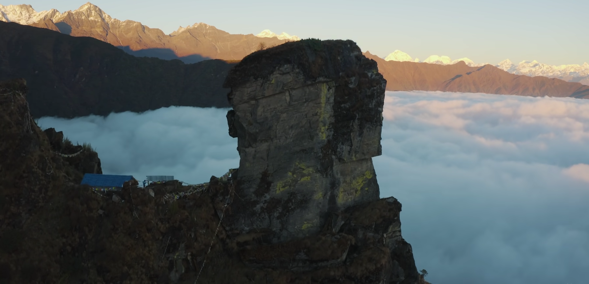

Nepali Poem
रङ
समयसँगै परिवर्तित पत्रहरु
लिएर लम्किएका छन् एक वृक्ष
सन्ध्याको आगमनसँगै
रमाउने छेपारोहरुको राजले
सखारैबाट
रक्ताम्य भएका छन् हिमाली पत्र
उजाड पार्न तराई पत्रलाई
सहश्र बाँध भत्काउदै
आएका छन् आँधी
पहाडि पत्रलाई सुकाउन
हतारिदै छन् चट्याङहरु
जूनले छरेको उजेली
छेक्न हास्दै छरिएका छन्
मेघहरु
आफ्नै पत्रहरु बिचको असमानतामा
भक्कानिएका छन् मेची
चन्द्र र सुर्य अङ्कित
रङमा आएको फिक्कापनको
कारण रङ्गाउन
ऊ माग्दै छन् गुराँससँग
रङको सापटी
पत्रहरु बिचको युद्धमा
खसिरहेको आफ्नै पत्र देखेर
ऊ खाेज्दै छन्
नाैलो बिहानीको रङ
जहाँ
गुलाफले
फुलाआेस् कमलको फुल
जहाँ
नयाँ आश बोकेर
बर्षियोस् बादल
जसरी
रातमा बाेलाउन पर्दैन तारा
बिहानिमा बाेलाउनु पर्दैन सुर्य
त्यसैले
आज ऊ लम्किएका छन्
फेर्न फिक्का पत्रका रङहरु
Nepali Poem
परिचय
हरेक बिहानी बोकेर जिम्मेवारी
रगत र पसिनाले सिचेको सपनाको खेतमा
विलीन भै दिन्छ, जब मेरो परिश्रम
महङ्गो यो समयसँगै
बोतलको एक घुट्कोमा
स्वाभिमान बेच्नेहरुका घुइँचोभित्र
फाटेका मेरा वस्त्रहरुले
बदनाम भै
दिन्छ, जब मेरो देश
अनि खोजिरहन्छु म स्वयम् आफ्नो परिचय !
सहदै अनगिन्ती चोटहरु
म बगिरहन्छु जब नदिझैँ खोज्न सुनाैलो गन्तव्यहरु
भाैतारिदै गल्ली गल्लीमा
तिम्रा सुकिला सोचका सामुन्ने म टिपिरहन्छु जब हराएका
अस्तित्वहरु
तब फिक्का भै दिन्छ मेरो कारण गुराँसहरु!
समयसँगको यो लडाइँमा
जब सङ्घर्षले कोर्न खोज्छु
बूढो पत्रलाई
आउने वसन्तमा पुन: नाैलो काँचुली फेराउने धर्का
जब फुलाउन खोज्छु
खाद्यान्न बिना
ओइलाएका कोपिलाको
उद्देश्य
जब छर्न खोज्छु
हराएको
प्रियतमाको त्यो अँध्यारो मुहारमा
जुनको उजेली
तब उर्लदै आँधी
भत्काइरहन्छ पाइला पिच्छे मेरो सपनाको
गोरेटोहरु
अनि खोजिरहन्छु म विलीन मेरो परिचय !
प्रत्येक छाकमा
पछ्याइरहन्छ जब भोको सुनामी
प्रत्येक दिन
छानाबाट जब दर्किन्छ अपमानका बर्षात
जब
मेरो अन्त्यष्टिमा किनेको कात्रोको ऋणले
झुकाउछ बाबाको शिर
र रित्ताउछ आमाको कोख
अनि देखेर मेरो शव
लज्जित हुने छन् मेरो देश
तब खोजिरहन्छु
दन्किरहेको ज्वालामा
मेरो परिचय !
मेरो परिचय !!
Nepali Poem
अँधेरीका यात्राहरु
रङ्गै रङ्गले सजिएका
इन्द्रेणीको मालाले
तराई, पहाड र हिमाललाई
रङ्गाउदा
गर्जिएका बादलबाट
निक्लिएका चट्याङहरुले
निति बेच्ने
खजुरोलाई तर्साउदा
जून मुस्कुराउदै
उदाउँनेछन् अनि
हट्नेछन् अँधेरीका यात्राहरू......।
कुटो, काेदालो, हलोलाई
सङ्गिनी बनाई
बिहानीको
चिरबिर
आवाज सँगै अघि बढाएको
ती सङ्घर्षका पाईलाहरु
अनि
बिहानीको मिरमिरेमा
रातो टीका लगाई परदेशिएका
कदमहरु
जब कलमको मसिले
शिक्षित बनाउने छन्
हट्नेछन् अँधेरीका यात्राहरू......।
पिँजडामा बन्द ती
नारी सङ्घर्षहरु
चकोर बनी
खुल्ला आकाशमा
पखेटा फिजाउदा
गुन्गुनाउने छन् चराहरु
जब
उजेली सँङ्गै
कमजोर हुनेछन्
उल्लुका दृष्टिहरु
आफुलाई बिलाएर
अर्काको सेवामा समर्पित
हुने देशबिहिन बादलहरुले
रङ्गाउने छन् जब भुगोलहरु
जल्ने छन् जब शान्तिका
दिप निभाउन खोज्ने
पुतलीहरु
अनि फेरी
घन्किने छन् देशभक्ति
मादलका धुनहरु
तब
हट्नेछन् अँधेरीका यात्राहरू......।
गँगौटी सबै पवित्र हुदैन
कङ्क सँधै
मांसाहारी हुन सक्दैन
त्यसैगरी सँधै
अौँसी हुदैन
सुनौलो किरण उदाए सँगै
हट्नेछन् अँधेरीका यात्राहरू......।
Most Beautiful hidden place Deudhunga
Nepal(Deudhunga)
Nepal is one of the most beautiful country where you find natural beauty given by god as well as different culture, religion , language and many more. When you open your eye in nepal you find heaven and when you close your eye
you find the peace in your mind. There are so many amazing places around the Nepal to see, We couldn’t possible include them all in just one list. So, In this article we are going to talking about Deudhunga which is one of
the best hidden place for trekking and relaxing with nature.
Deudhunga
Deudhunag is located in Remote Bigu Rural Municipality of Dolakha. Bigu is a former village development committee that is now Rural Municipality in Dolakha District in Bagmati Province of north-eastern Nepal. Bigu is mostly popular
for visiting the oldest “Bigu Gumba” So, People are less known about “Deudhunga”. Deudhunga is only 5 hours hike from Bigu Gumba.
Deudhunga is at an altitude of 3574 meters. When you reached Deudhunga you saw the amazing
stone where people worship it as God. It seems like a house at the top of the mountain.Every year in the month of shrawan on full moon day as per the Nepali calender, There is a festival in the temple. Numerous people gather
on this occasion. According to religious beliefs, If you worship it the aspirations of mind will be fulfilled. One amazing fact is Even though Hindus consider it to be a form of shiva, they worship Seti Devi(White Goddess)
From Deudhunga you saw delighful Langtang Himal, Gaurishankar Himal, Ganesh Himal , Jugal himal and Shishapangma Himal. From there you can get a glimpse of heaven.
KamalBlog Find more blog here
Rumor of Deudhunga in Nepali(किंवदन्ती)
धेरै समय पहिले अर्थात सत्य युगको समयमा सबै चिजहरुको मनोकामना पुरा हुन्थ्यो रे। भनिन्थ्यो सत्य युगको समयमा निर्जीव वस्तुहरु पनि कुरा गर्थे रे तिनिहरु पनि चलाएमान थियो रे । त्यहि युगको बेला अर्थात सत्य युगको बेला एउटा गाँउमा आमाच्युकुलुङ र आमासमरे नाम गरेको एक जोडि पत्नी पति पनि बस्थे । एक दिन ती दुई पतिपत्नी बिच मनमुटाव भएछन्। मनमुटाव पनि एति ठूलो भयो कि अब दुबै जना एकसाथ बस्न नसकिने भयो। त्यसैले साँझको समयमा आमासमरे आमाच्युकुलुङलाई छोडेर गएछन्। मानिसहरु आएर पुज्न सक्ने ठाँउमा पुग्ने उदेश्य लिएर आमासमरे घरबाट निक्लिएछ घरबाट निस्किने बेलामा उनले आमाच्युकुलुङलाई कसैले पुज्न अनि भेट्न नसकोस् भनि सराप दिएछ। जसको कारण आमाच्युकुलुङलाई कसैले पुजिदैन ।उता आमासमरे भने हिड्दै हिड्दै अहिलेको देउढुङ्गा भएको ठाउमा पुग्नु भएछ। त्यहि समयमा कुखुराको भाले बासेको कारण उनले मानिस आइपुग्ने त्यहि ठाउँ रोज्नु भएछ र ढुङ्गामा परिणत हुनु भएछ। त्यहि भएर देउढुङ्गालाई आमासमरे पनि भन्ने गरिएको भनि किंवदन्तीमा पाइन्छ। किंवदन्तीको कुरा एकातिर छदै छ तर पनि प्राकृतिक दृष्टिकोण र सुन्दरताको हिसाबले देउढुङ्गा घुम्नको लागि अतिसुन्दर गन्तव्य हो। स्वर्गीय अनुभुति दिने यस्तो सुन्दर स्थाननै नेपालको गहना हो।
